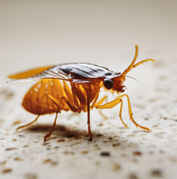

Cockroach Control
Our comprehensive cockroach control services ensure that your property is free from these unwanted invaders. Cockroaches can carry disease-causing bacteria and allergens, making it essential to eliminate them promptly. We utilize effective treatments tailored to your specific situation, ensuring a pest-free environment.
Cockroaches thrive in warm, moist environments and can reproduce rapidly, making early intervention crucial. Our team begins with a thorough inspection of your property to identify potential breeding sites and entry points. We then develop a customized treatment plan that may include baiting, trapping, and insecticide application to eliminate existing populations.
Post-treatment, we provide guidance on preventing future infestations. This may include sealing cracks and crevices, maintaining proper sanitation, and addressing moisture issues. With our ongoing support and maintenance plans, you can enjoy a cockroach-free home or business all year round.

Bed Bug Extermination
Bed bugs are notorious for their ability to hide and multiply quickly. Our bed bug extermination services are designed to eliminate these pests at every stage of their life cycle. We conduct thorough inspections, followed by targeted treatments that ensure complete eradication and peace of mind.
Bed bugs are often found in mattresses, bed frames, and other furniture, making it vital to address infestations swiftly. Our trained technicians employ a combination of heat treatment, chemical application, and thorough cleaning to eradicate bed bugs effectively. We also provide detailed instructions for preparing your home for treatment to maximize its effectiveness.
After treatment, we continue to support you with follow-up inspections to ensure that all bed bugs have been eliminated. Additionally, we offer preventative measures and education on how to avoid bringing bed bugs into your home in the future, ensuring lasting peace of mind.

Flea Control
Fleas can be a significant nuisance for both pets and humans. Our flea control services include a combination of treatment options, focusing on both your home and pets to eliminate infestations. We provide advice on preventing future infestations and maintaining a flea-free environment.
Fleas can reproduce rapidly, leading to severe infestations that can affect the comfort and health of your household. Our approach begins with a detailed inspection to identify areas of infestation, including carpets, upholstery, and pet bedding. We then implement targeted treatments, which may include vacuuming, washing, and applying safe insecticides designed to eliminate fleas at all life stages, including eggs, larvae, pupae, and adults.
To prevent reinfestation, we advise on maintaining cleanliness in your home, regular grooming of pets, and using preventative flea control products. Our goal is to ensure that your living space remains comfortable and free of fleas, allowing both you and your pets to enjoy your home without the irritation of these pesky pests.
Why Choose Us?
At Welsh Town And Country Pest Services, we prioritize your safety and satisfaction. Our experienced technicians use the latest methods and eco-friendly products to effectively manage pest problems while minimizing risks to your family and pets. We are dedicated to providing reliable and professional pest control services in Neath and surrounding areas.
Our commitment to excellence is reflected in our customer service and follow-up care. We understand that dealing with pests can be stressful, which is why we strive to make the process as seamless as possible. With our expertise, you can rest assured that your pest problems will be handled efficiently and effectively.
Choose Welsh Town And Country Pest Services for all your pest control needs. Contact us today to schedule an inspection or to learn more about our services. Your peace of mind is our top priority!